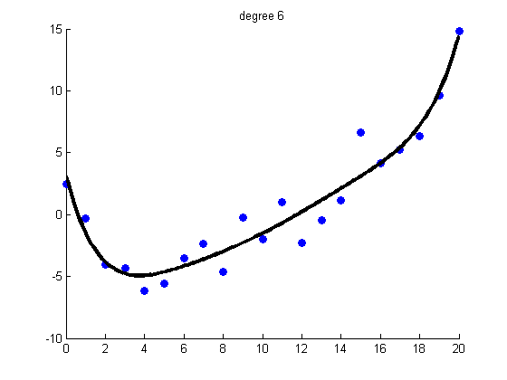
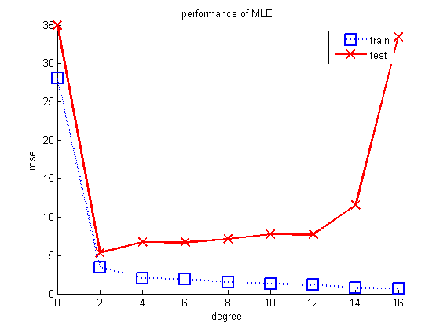
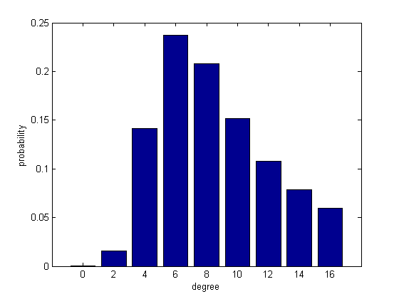

Contents
Make the data
n = 21;
xtrain = linspace(0,20,n)';
randn('state', 654321);
xtest = [0:0.1:20]';
sigma2 = 4;
w = [-1.5; 1/9];
fun = @(x) w(1)*x + w(2)*x.^2;
ytrain = feval(fun, xtrain) + randn(size(xtrain,1),1)*sqrt(sigma2);
ytestNoisefree = feval(fun, xtest);
ytest = ytestNoisefree + randn(size(xtest,1),1)*sqrt(sigma2);
Fit different degrees
degs = 0:2:16;
lambdas = [0 -1];
for j=1:length(lambdas)
lambda = lambdas(j);
for k=1:length(degs)
Basis function expansion
deg = degs(k);
[Xtrain] = rescaleData(xtrain);
Xtrain = degexpand(Xtrain, deg, false);
[Xtest] = rescaleData(xtest);
Xtest = degexpand(Xtest, deg, false);
Fit and evaluate model;
if lambda==0
[model, logev(k)] = linregNetlabFit(Xtrain, ytrain, lambda);
else
[model, logev(k)] = linregNetlabFitEb(Xtrain, ytrain);
end
ypredTest = linregNetlabPredict(model, Xtest);
ypredTrain = linregNetlabPredict(model, Xtrain);
testMse(k) = mean((ypredTest - ytest).^2);
trainMse(k) = mean((ypredTrain - ytrain).^2);
Plot one of the fits (for MLE)
if deg==6 && lambda==0
figure;
scatter(xtrain, ytrain,'b','filled');
hold on;
plot(xtest, ypredTest, 'k', 'linewidth', 3);
hold off
title(sprintf('degree %d', deg))
end

end
Plots
if lambda == -1
figure;
probs = exp(normalizeLogspace(logev));
plot(degs, logev ,'ko-', 'linewidth', 2, 'markersize', 12);
xlabel('degree'); ylabel('log evidence')
printPmtkFigure('linregL2PolyVsDegree-logev')
figure; bar(degs, probs)
xlabel('degree'); ylabel('probability')
printPmtkFigure('linregL2PolyVsDegree-probModel')
else
figure;
hold on
plot(degs, trainMse, 'bs:', 'linewidth', 2, 'markersize', 12);
plot(degs, testMse, 'rx-', 'linewidth', 2, 'markersize', 12);
xlabel('degree')
ylabel('mse')
legend('train', 'test')
if lambda==0
title('performance of MLE')
else
title('performance of EB')
end
printPmtkFigure('linregL2PolyVsDegree-mse')
end



end